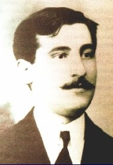
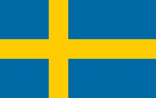
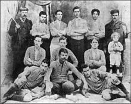
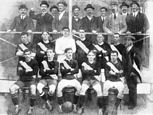
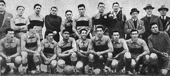

BOCA JUNIORS
Fundación
Boca Juniors fue fundado en Buenos Aires el 3 de abril de 1905, en una década fundacional en la que se crearon no menos de 300 clubes de fútbol. Para entonces hacía casi cuarenta años que se practicaba el fútbol en la Argentina y catorce años desde la creación de la liga amateur, la tercer liga más antigua del mundo, luego de la inglesa y la escocesa. La fundación de Boca Juniors fue obra de seis adolescentes, hijos de italianos y vecinos de La Boca, barrio de trabajadores inmigrantes y fuerte identidad genovesa («xeneize» en dialecto): Esteban Baglietto, Alfredo Scarpati, Santiago Sana, Tomás Movio, los hermanos Juan Antonio Farenga y José Teodoro Farenga, Luis De Harenne y otros. Baglietto, Scarpatti y Sana, eran compañeros en la Escuela Superior de Comercio (Carlos Pellegrini desde 1908), ubicada entonces en la calle Bartolomé Mitre 1364. Allí tenían como profesor de educación física, al irlandés Paddy MacCarthy, uno de los precursores del boxeo en Argentina, quien también había sido futbolista y que inculcaba en sus alumnos el valor del deporte, a la vez que les enseñaba las técnicas del boxeo y del fútbol. El director del colegio, el profesor Santiago Fitz Simon, fue uno de los pioneros en la Argentina en la inclusión de la educación física y del deporte como disciplina sistemática en la educación de los jóvenes, siendo el primero en Argentina en implementar la enseñanza de la educación física en la escuela. Los tres jóvenes llevaron al grupo de amigos del barrio, la propuesta de crear un club de fútbol, a la que adhirieron inmediatamente los hermanos Farenga. El lunes 3 de abril, luego de finalizadas las clases, los cinco adolescentes se reunieron en el sencillo hogar de Baglietto en Ministro Brin 1232 para concretar el proyecto, pero el padre los echó de la casa debido al alboroto que generaban los muchachos. Entonces los cinco cruzaron la calle para continuar la reunión en la Plaza Solís y ese mismo día, en uno de los bancos del parque, fundaron un club de fútbol que llegaría a ubicarse entre los más prestigiosos del mundo. A continuación, acordaron que Esteban Baglietto, un menor de edad, sería el primer presidente. Pero por esa misma razón recapacitaron luego, y pocos días después tomaron la decisión de nombrar presidente a Luis Cerezo.
La camiseta
Boca Juniors tuvo tres o cuatro camisetas antes de adoptar la definitiva, de color azul con una amplia banda amarilla horizontal. En su página web el club informa que existe una versión, no verificada con certeza, que cuenta que la primera camiseta fue de color rosa y que se utilizó solo en los dos primeros partidos. Sin embargo, reportajes hechos a fundadores y primeros socios coinciden en que el equipo adoptó una camiseta de fondo blanco con rayas verticales muy finas de color negro, que confeccionó la hermana de los Farenga. Luego hubo una celeste, quizá otra azul, y más tarde una de líneas finitas blancas y azules En 1907 Boca abandonó la camiseta que había utilizado desde 1905. La tradición oficial relata que el club Nottingham del barrio de Almagro poseía una casaca parecida y que, para resolver la cuestión, decidieron jugar la camiseta en un partido. Boca perdió y debió cambiar los colores. La elección de los colores definitivos del equipo fue dejada al azar. Juan Rafael Brichetto, presidente del club el año anterior (lo sería nuevamente en 1910-13), propuso adoptar los colores de la bandera del primer buque al que él le diera paso al día siguiente; Brichetto era operador de uno de los puentes del puerto 41314. El barco resultó ser sueco y fue así que el club adoptó los colores azul y amarillo («azul y oro») de la bandera sueca. Sin embargo no fue esa la camiseta definitiva, pues hasta 1913 Boca utilizó un diseño de fondo azul con una franja diagonal de izquierda a derecha. Ese año el club decidió un nuevo diseño, que con pocas diferencias sería mantenida en adelante: azul, con una amplia franja horizontal amarilla al medio.
Primer partido y primeros pasos
El primer partido que disputó Boca, fue el 21 de abril de 1905; un amistoso contra el club Mariano Moreno utilizando la indumentaria blanca con tiras negras. El partido se jugó en la Dársena Sur y Boca ganó 4:0, con dos goles de Juan Farenga, uno de su hermano José Farenga y uno de Santiago Sana. Después de varios amistosos, Boca Juniors comenzó a participar en ligas menores: en 1905 se inscribió en la Liga de Villa Lobos. En 1906 se inscribió en la Liga Central, ganando la Copa Reformista, la más antigua que posee el club. En 1907 participó de la Liga Albión, también obteniendo el certamen. Ese mismo año actuó en el torneo organizado por la Asociación Porteña, en la que también actuaba el Universal Football Club de Montevideo, contra quien jugó su primer partido internacional el 8 de diciembre de 1907, perdiendo 0:1. Durante muchos años el club se desenvolvió con las muchas carencias características de un barrio obrero, sobre la base del esfuerzo voluntario de sus miembros. El acta más antigua que se conoce (20 de febrero de 1906) registra la siguiente anotación, demostrativa de las carencias, pero también del sentido del humor de los jóvenes dirigentes: El señor Farenga dice que habiendo conseguido un amigo para que teja la red sin cobrar un solo peso, propone que se reúna la suma de dinero necesaria para comprar el hilo, moción que es aceptada por todos, excepto por J. Brichetto, que donara el material necesario. Cerezo donara las agujas para tejerla y Pedro Sana traerá un pedazo de red que servirá para las circunstancias.
El primer superclásico
A lo largo de toda su historia Boca encontraría en River Plate (1901) a su rival clásico. Los dos equipos se formaron en La Boca y ambos reconocían explícitamente su herencia genovesa. En el caso de River, tomó los colores de su casaca de la bandera de Génova. En el futuro cada enfrentamiento entre los dos principales equipos del fútbol argentino paralizaría al país, dividiendo sus simpatías entre ambos, hasta alcanzar la categoría de «superclásico del fútbol argentino». El clásico Boca-River ha sido considerado como uno de los cincuenta mejores espectáculos deportivos del mundo. El primer enfrentamiento oficial entre ambos equipos se concretó en el torneo de Primera División el 24 de agosto de 1913, en cancha de Racing, ganando River Plate 2:1. Anteriormente hubo otros enfrentamientos de carácter amistoso, pero los historiadores discrepan sobre fechas y resultados. El historiador Diego Estévez sostiene que el primer Boca-River fue un partido amistoso jugado el 2 de agosto de 1908, en el que Boca como local, venció 2:1; del mismo no se han encontrado pruebas documentales. El historiador Sergio Lodise sostiene que el primer Boca-River registrado en fuentes escritas se produjo en 1912. El sitio Informe Xeneize afirma, sin precisar la fecha que el primer superclásico finalizó con una empate 0:0 y una gran trifulca entre los simpatizantes.
La gira europea
En la Asociación Argentina surge la idea de enviar un representativo nacional a Europa, luego de la gran sensación que habían causado los uruguayos en los Juegos Olímpicos de 1924. Al no lograr un acuerdo, son los dirigentes de Boca que ofrecen mandar a su plantel a dicho emprendimiento. De esta manera, la Asociación autoriza al club a postergar sus partidos por el campeonato, para emprender su gira europea, un año después, en 1925. Boca se convirtió en el primer equipo argentino en competir en Europa, jugando en España (13 partidos), Alemania (5 partidos) y Francia (1 partido). Ganó 15 encuentros, perdió 3 y empató el restante, convirtiendo 40 goles a favor y recibiendo 16 en contra, obteniendo una increíble efectividad del 78,95 %. Los partidos más importantes de la gira fueron los dos triunfos contra el Atlético y el Real Madrid, este último ante la presencia del Rey de España Alfonso XII. Al regresar la Asociación Argentina de Football le entregó la Copa de Honor, en reconocimiento del logro alcanzado en Europa. El plantel xeneize estaba compuesto por Américo Tesoriere, Ludovico Bidoglio, Ramón Muttis, Segundo Médici, Alfredo Elli, Mario Busso, Domingo Tarasconi, Antonio Cerrotti, Dante Pertini, Carmelo Pozzo, Carlos Antraygues y Alfredo Garasini. Además, viajaron junto a ellos cinco refuerzos cedidos por distintos conjuntos argentinos; ellos eran Manuel Seoane (El Porvenir), Cesáreo Onzari (Huracán), Luis Vaccaro (Argentinos Juniors), Octavio Díaz (Rosario Central) y Roberto Cochrane (Tiro Federal de Rosario). En esa oportunidad, el equipo fue acompañado por un fanático boquense llamado Victoriano Caffarena, que financió parte de la gira, ayudó al equipo en todo. Caffarena fue reconocido como «Jugador número 12», designación que desde entonces se adoptaría para la «hinchada» de Boca. El primer encuentro fue ante Celta de Vigo ganado 3:1. Antonio Cerrotti fue el que marcó el primer y segundo gol del partido, convirtiéndose en el primer futbolista argentino en marcar un gol en Europa. El máximo goleador de aquella gira fue Manuel Seoane, cedido por El Porvenir especialmente para la misma, quien marcó 12 goles y disputó 16 partidos. El 5 de marzo disputa el primero encuentro y registra los siguientes resultados:
| Rival | Resultado |
|---|---|
| Celta de Vigo | 3:1 |
| Celta de Vigo | 1:3 |
| Deportivo La Coruña | 3:0 |
| Deportivo La Coruña | 1:0 |
| Atlético de Madrid | 2:1 |
| Real Madrid | 1:0 |
| Real Sociedad | 1:0 |
| Real Unión | 0:4 |
| Athletic Club | 2:4 |
| Osasuna | 1:0 |
| RCD Español | 1:0 |
| RCD Español | 3:0 |
| Combinado Catalán | 2:0 |
| Bayern Munich | 1:1 |
| Norden Nordwest West | 3:0 |
| Spielvereinigung | 7:0 |
| Combinado de Fráncfort | 2:0 |
| Eintracht Frankfurt | 2:0 |
| Combinado de París | 4:2 |
Los títulos amateurs
Boca se asoció a la Argentine Football Association en 1908, participando en división intermedia hasta su traspaso a primera en 1913. En 1919 hubo un cisma en la entidad organizadora, realizándose dos torneos paralelos hasta 1926. Boca permaneció en la ahora renombrada Asociación Argentina de Football con otros cinco equipos, en tanto que los restantes catorce se asociaron en la Asociación Amateur de Football. El torneo de 1919 de la Asociación Argentina se inició con los seis equipos que permanecieron en ella (Boca, Huracán, Estudiantes de La Plata, Porteño, Eureka y Sportivo Almagro), pero fue interrumpido debido a las graves irregularidades que se registraron en el mismo, declarándose ganador a Boca debido al hecho de que había sacado una diferencia indescontable sobre los demás equipos.3332 Por su parte, en el torneo de la Asociación Amateur fue Racing quien se consagró campeón ese año. En 1920 Boca y River fueron campeones en ambas ligas. El equipo volvería a ganar los torneos de su liga correspondientes a 1923, 1924 y 1926 (los campeones de la otra en esos años fueron San Lorenzo, nuevamente San Lorenzo e Independiente) y en 1930 ganó su primer torneo unificado, el último jugado por el club como amateur, por una buena diferencia ante los demás, jugando 35 partidos (de los cuales ganó 29, empató 3 y perdió 3), consiguiendo 61 puntos y marcando 113 goles a favor y 33 en contra. En esos años Boca se consolidó como uno de los clubes más populares del país, con figuras como el portero Américo Tesoriere («la Gloria»), deportista ejemplar e ídolo sudamericano, Pedro Calomino, inventor de «la bicicleta» y primer gran ídolo boquense, Alfredo Garasini, su primer goleador y jugador polifuncional que llegó a jugar en las once posiciones y ser técnico en el bicampeonato 1943-1944, Roberto Cherro que jugaría hasta 1938, convirtiendo 221 goles en 305 partidos, segundo máximo goleador de la historia de Boca, y Domingo Tarasconi, otro de los grandes goleadores xeneizes por aquellos años quien fue 3 veces máximo goleador de la liga (en 1922, 1923 y 1927) y fue el máximo goleador del club en la era amateur.